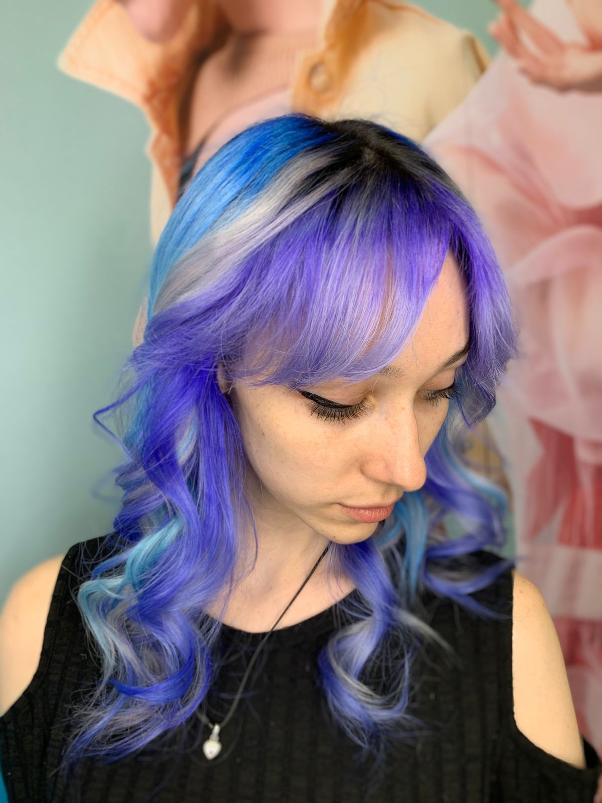
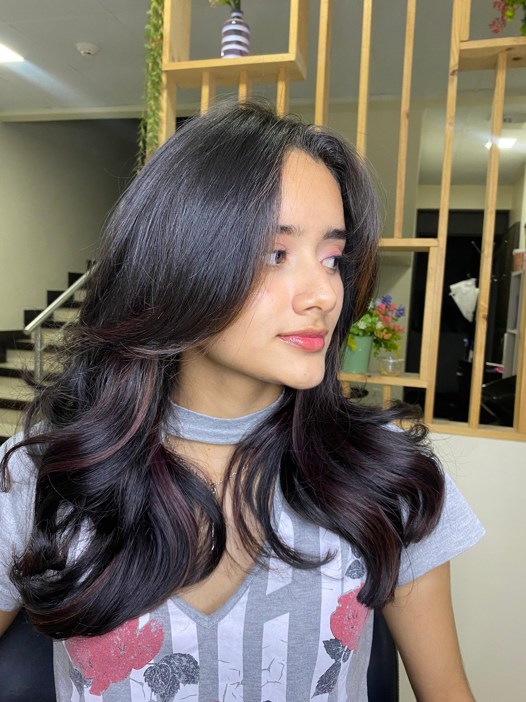

Balayage
Besada por el Sol luce un look natural y luminoso con nuestra técnica.
En tonos miel, este estilo aporta calidez y elegancia,
creando un efecto como si el sol hubiera acariciado tu cabello.
Liso Orgánico
Transforma tu cabello con nuestro alisado orgánico de Top Hair Top Liss,
un tratamiento brasileño que ofrece un liso duradero, sin frizz y lleno de brillo.
Ideal para un look natural y manejable, cuidando tu cabello sin químicos agresivos.
¡Luce un acabado suave y profesional!

Coloración Profesional
Dale vida a tu cabello con nuestros servicios de coloración profesional,
utilizando pigmentos de alta calidad. Desde tonos vibrantes y audaces hasta acabados suaves y naturales,
Nuestro enfoque garantiza un color duradero, brillante y saludable, adaptado a tu estilo y personalidad.

Butterfly Haircut
Luce un estilo fresco y en tendencia con el butterfly haircut.
Este corte en capas crea volumen y movimiento, con capas cortas alrededor del rostro y largas en la parte inferior,
brindando un look versátil y ligero sin perder el largo. Ideal para dar cuerpo y textura a cabellos medianos a largos.
Amor por los Rizos
En Depicejas, amamos las cabelleras rizadas y creemos que amar tus rizos es amarte a ti misma.
Celebramos la belleza de los cabellos ondulados, rizados y afros,
contribuyendo a cambiar los estándares de belleza femeninos y resaltando la autenticidad de cada textura natural.